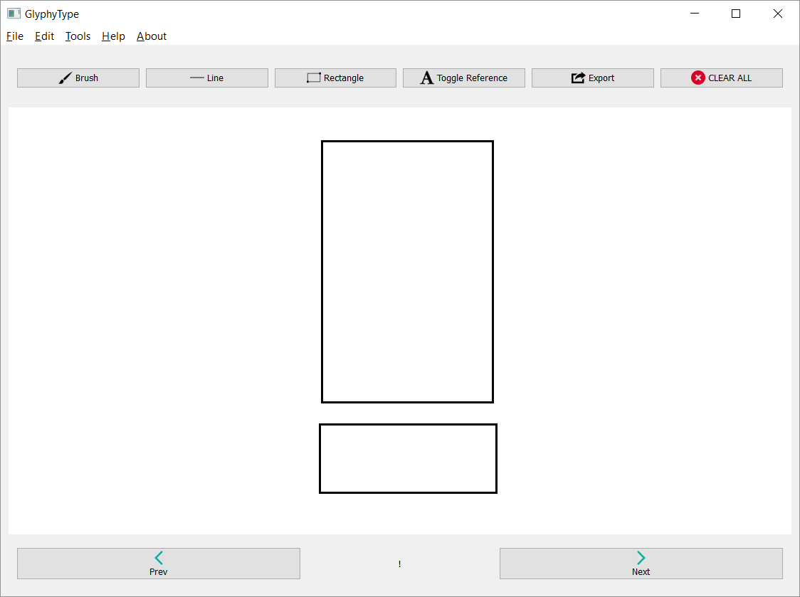
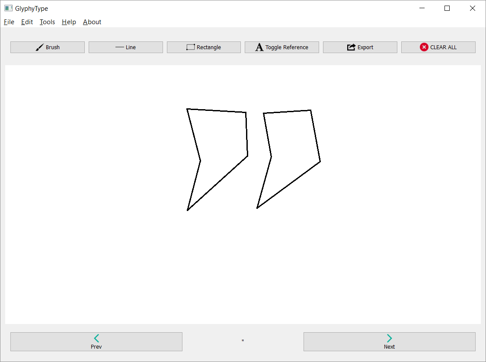

So you've started using the GlyphyType application and are ready to start creating your own personalized fonts? Good. Here, you'll find a step-by-step guide to doing just that.
After launching GlyphyType, you should create a new
font file. To do this, go to File -> New Font
or if you are on Windows/Linux, use Ctrl+N.
Now that you've created a new font, it's time to begin drawing glyphs. In the bottom middle of the application you should notice an exclamation point; this is where you will see which character, symbol, or glyph you are currently drawing.
To begin drawing your exclamation point glyph, first select
a tool to use. A basic exclamation point glyph shape you
might make is two rectangles, so select the Rectangle tool
either from the Utitlity Toolbar, Tools -> Rectangle,
or Ctrl+R if you're using Windows/Linux.
To use the Rectangle Tool, simply click and drag in the drawing area. The two corners of the rectangle will be the point you clicked at and the point you released the mouse button at. Play with this tool to familiarize yourself with it.
When you're done, the exclamation point glyph should look similar to the following:
After completing the exclamation point glyph, you can continue to the next glyph in the glyph map by clicking Next in the Navigation Toolbar. You should notice the current glyph indicator change to a double quotation mark; this is the next glyph to be drawn.
For this glyph, you might draw two triangles. Let's do this by using the
Line Tool. Select the Line Tool either by clicking it in the Utility
Toolbar, selecting Tools -> Line, or Ctrl+L if
you are using Windows/Linux.
To use the Line Tool, left click with the mouse to create a point. For each consecutive point, you should see your line drawn after clicking. When you have reached the next-to-last point you wish to create, and are ready to close the glyph outline, simply right click with the mouse and a line will automatically be drawn, connecting back to the origin.
Familiarize yourself with the Line Tool and your double quotation marks might look something like the following:
Now, continue to the next glyph by clicking Next in the Navigation Toolbar at the bottom of the application. Continue drawing glyphs until you have reached the end of the glyph map. Note: the tilde (~) is the last glyph in the map.
When creating your font, you definitely do not want to lose your progress, or current
state of the font. You can save the font from File -> Save or with
Ctrl+S if you are using Windows/Linux.
The file that you save will be a .gtfo file (GlyphyType Font Output). This file is not human-readable, and is exclusive to the GlyphyType application.
Finally, you find yourself ready to actually export a TTF (True Type Font)
that you can use! To do this, go to File -> Export Font or
Ctrl+Alt+S if you are using Windows/Linux. The TTF file that is exported
will have the same name as the GTFO file you are currently working on; thus,
you must save your GTFO file prior to exporting.
Later you might find that you want to edit your font. This is done by importing
the GTFO file. To do this, go to File -> Import Font or Ctrl+O
if you are using Windows/Linux. This will open a dialog in which you may select
your GTFO file to import.